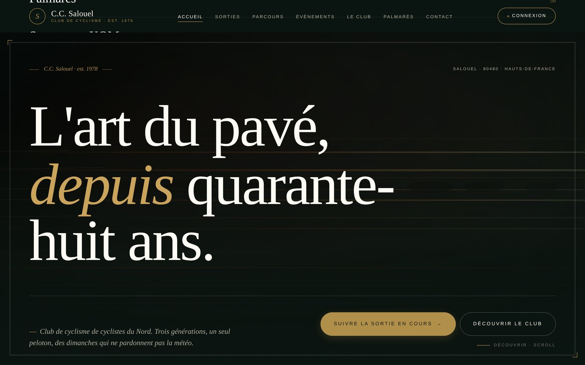
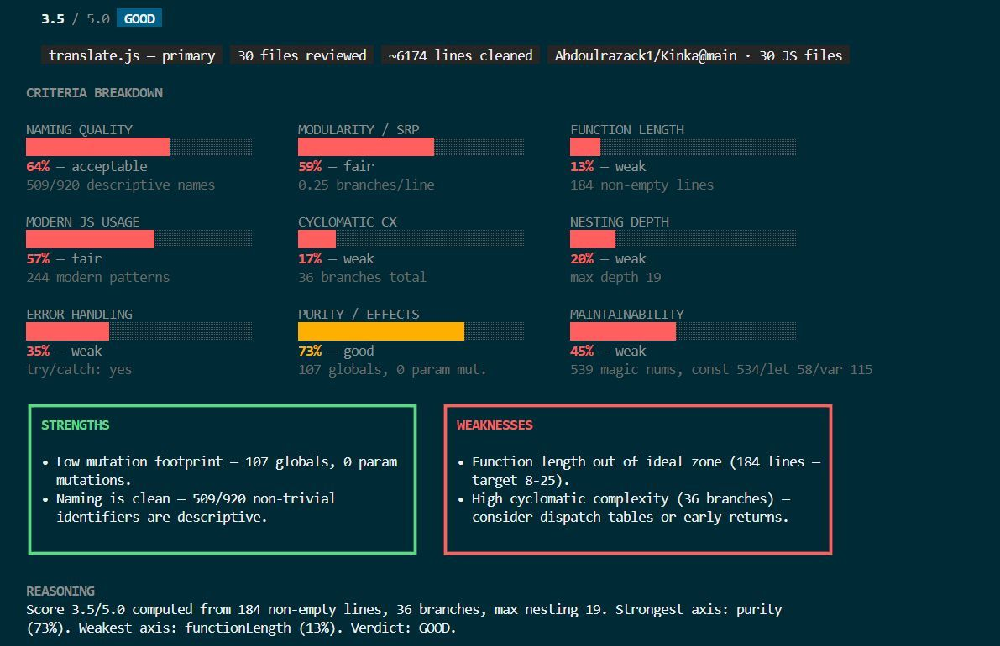
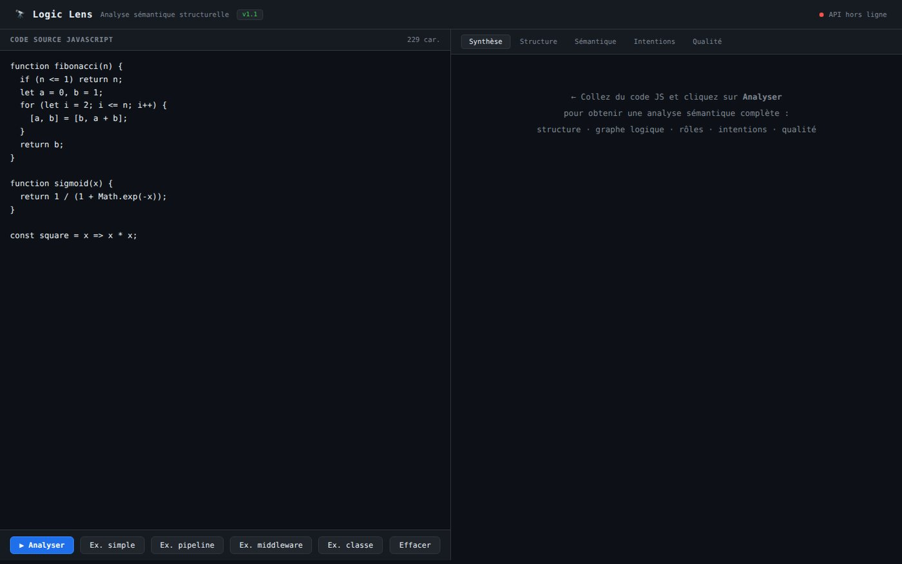
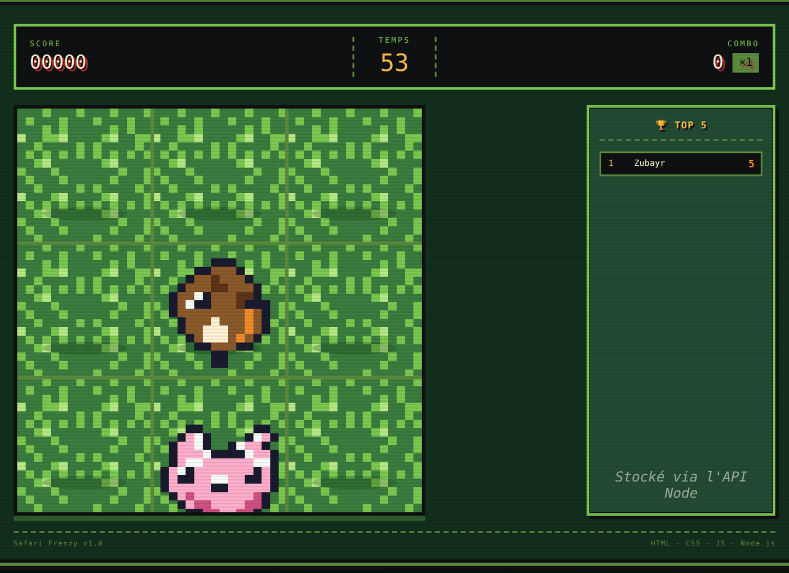
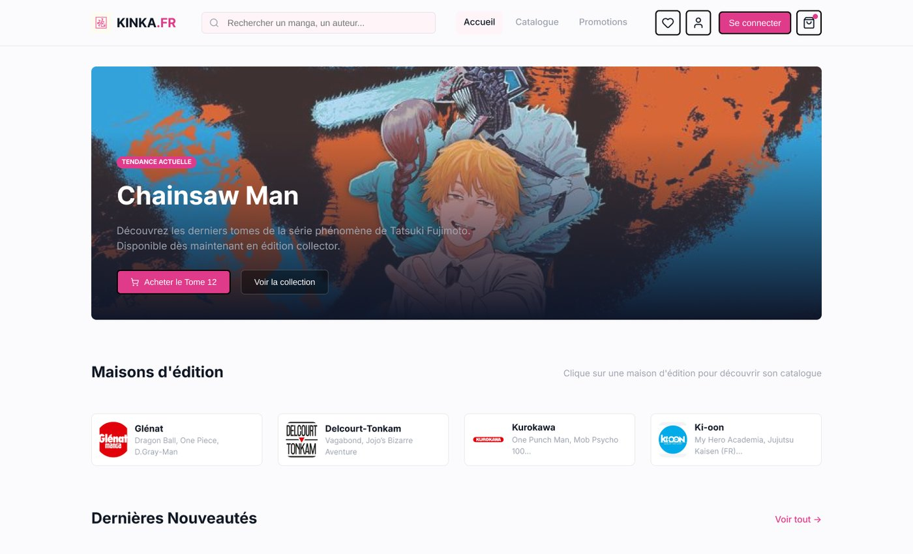
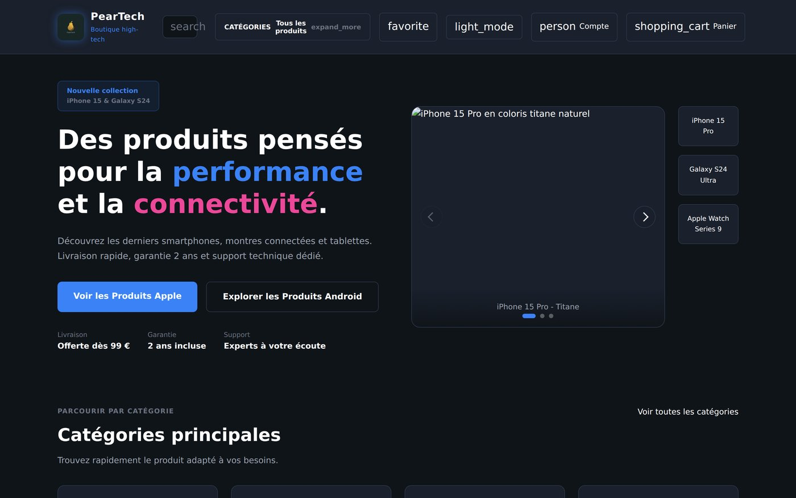
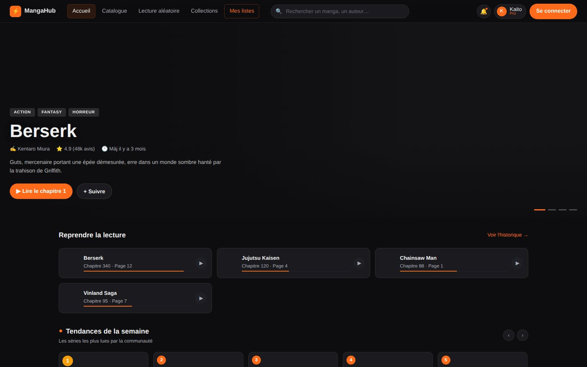

Front-end
Construction de sites multi-pages responsives, mise en page Flexbox/Grid, design system simple, accessibilité de base.
- HTML5
- CSS3 & Flex/Grid
- JavaScript (ES6+)
- Bootstrap
- Responsive design
Je m'appelle Abdoulrazack, étudiant en Développement Web & Web Mobile (DWWM). Je conçois des interfaces front-end soignées et j'explore le back-end Node.js et le machine learning à travers des projets personnels — d'une plateforme full-stack pour un club de cyclisme à un Transformer qui devine les formules cachées dans le code JavaScript.
En formation Développeur Web et Web Mobile, j'apprends à transformer des idées en interfaces solides — d'abord par le HTML/CSS, puis avec JavaScript, et plus récemment avec Node.js côté serveur.
Je suis arrivé au code par curiosité et par envie de fabriquer. Mes projets personnels sont mon vrai terrain d'entraînement : recopier ce qui m'inspire, comprendre comment ça fonctionne, puis ajouter ma propre version. C'est aussi simple que ça, et c'est ce qui me fait progresser le plus vite.
Mes goûts : un code lisible avant d'être malin, une UX qui ne fait pas perdre de temps, et des interfaces qui ont un peu de caractère. La pop culture japonaise — manga, design éditorial — influence souvent mes choix visuels.
Ce que je manipule quotidiennement, ce que j'apprends, et ce que j'ai déjà mis en pratique sur de vrais projets.
Construction de sites multi-pages responsives, mise en page Flexbox/Grid, design system simple, accessibilité de base.
Serveurs Express, API REST, MySQL, JWT, manipulation d'AST avec Acorn et premières expériences ML avec TensorFlow.js. Concrétisé dans Cycling, Logic-Lens, Js-Ranker et Safari Frenzy.
Versioning Git/GitHub, design dans Figma puis intégration, debugging dans les DevTools, et maintenant un peu de CI avec GitHub Actions.
Cahier des charges, maquettage, découpage en tâches, et une bonne dose de curiosité pour aller chercher la réponse là où elle se trouve.
Sept projets qui résument bien où j'en suis. D'une plateforme full-stack pour un club de cyclisme à un Transformer JavaScript, en passant par un mini-jeu Canvas, du tooling AST et trois e-commerces front-end.

/ Full-stackPlateforme web complète pour un club de cyclisme : 19 pages, API REST avec rôles, base MySQL, génération automatique de courses depuis du scraping, GPX, profils altimétriques, météo et vue Street View synchronisée au tracé.

/ ToolingMoteur de notation pour fonctions JavaScript. Analyse l'AST sur 9 critères (nommage, modularité, longueur, complexité cyclomatique, profondeur, gestion d'erreurs, pureté, maintenabilité…) et expose le score via CLI ou API REST.

/ ML / AIIntelligence artificielle qui déchiffre le « pourquoi » du code JavaScript. Un Transformer Encoder TensorFlow.js apprend à extraire l'invariant mathématique ou la formule logique sous-jacente à n'importe quelle fonction JS.

/ GameMini-jeu de capture pixel art façon Game Boy, avec API de scores en Node.js. 60 secondes pour attraper un maximum de créatures sans toucher les BOOMb. Système de combo jusqu'à ×5, classement persistant, rendu Canvas hi-DPI.

/ Front-endE-commerce de mangas complet, conçu de la maquette au code. Une trentaine de pages (catalogue, fiche produit, panier, paiement, profil, FAQ, CGV…) pensées comme un vrai produit en ligne.

/ Front-endBoutique e-commerce tech, le projet sur lequel j'ai le plus itéré (68 commits). L'occasion de pousser plus loin la cohérence visuelle, le découpage en sous-pages et l'architecture des fichiers.

/ Front-endPlateforme de lecture manga : navigation par séries et collections, lecteur de chapitre, espace utilisateur. Plus de JavaScript que mes projets précédents — environ 38 % du repo.
D'autres projets et exercices sur GitHub —
Voir tous mes reposLa formation DWWM est découpée en étapes. Voici où j'en suis aujourd'hui, et ce qui suit.
Sémantique, mise en page Flexbox/Grid, responsive. Premières maquettes intégrées.
Architecture de fichiers, design system simple, parcours utilisateur du panier au paiement (Kinka, Peartech).
Manipulation du DOM, événements, fetch d'API, premiers projets dynamiques. C'est l'étape actuelle du cursus.
Express, REST, MySQL, JWT, bcrypt, validation, scraping et services externes — déjà mis en pratique sur Cycling, Js-Ranker et Safari Frenzy, en attendant le module officiel du cursus.
React, gestion d'état, build modernes. Objectif : transformer mes projets statiques en SPA.
Une idée, un projet, une opportunité de stage ou d'alternance ? Le plus simple est l'email — ou ce formulaire.